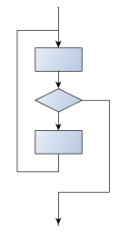

7. Iteration¶
Computers are often used to automate repetitive tasks. Repeating identical or similar tasks without making errors is something that computers do well and people do poorly.
Repeated execution of a set of statements is called iteration. Because iteration is so common, Python provides several language features to make it easier. We’ve already seen the for statement in chapter 3. This the the form of iteration you’ll likely be using most often. But in this chapter we’ve going to look at the while statement — another way to have your program do iteration, useful in slightly different circumstances.
Before we do that, let’s just review a few ideas...
7.1. Assignment¶
As we have mentioned previously, it is legal to make more than one assignment to the same variable. A new assignment makes an existing variable refer to a new value (and stop referring to the old value).
The output of this program is:
15 7
because the first time airtime_remaining is printed, its value is 15, and the second time, its value is 7.
It is especially important to distinguish between an assignment statement and a Boolean expression that tests for equality. Because Python uses the equal token (=) for assignment, it is tempting to interpret a statement like a = b as a Boolean test. Unlike mathematics, it is not! Remember that the Python token for the equality operator is ==.
Note too that an equality test is symmetric, but assignment is not. For example, if a == 7 then 7 == a. But in Python, the statement a = 7 is legal and 7 = a is not.
In Python, an assignment statement can make two variables equal, but because further assignments can change either of them, they don’t have to stay that way:
The third line changes the value of a but does not change the value of b, so they are no longer equal. (In some programming languages, a different symbol is used for assignment, such as <- or :=, to avoid confusion. Some people also think that variable was an unfortunae word to choose, and instead we should have called them assignables. Python chooses to follow common terminology and token usage, also found in languages like C, C++, Java, and C#, so we use the tokens = for assignment, == for equality, and we talk of variables.
7.2. Updating variables¶
When an assignment statement is executed, the right-hand side expression (i.e. the expression that comes after the assignment token) is evaluated first. This produces a value. Then the assignment is made, so that the variable on the left-hand side now refers to the new value.
One of the most common forms of assignment is an update, where the new value of the variable depends on its old value. Deduct 40 cents from my airtime balance, or add one run to the scoreboard.
Line 2 means get the current value of n, multiply it by three and add one, and assign the answer to n, thus making n refer to the value. So after executing the two lines above, n will point/refer to the integer 16.
If you try to get the value of a variable that has never been assigned to, you’ll get an error:
>>> w = x + 1 Traceback (most recent call last): File "<interactive input>", line 1, in NameError: name 'x' is not defined
Before you can update a variable, you have to initialize it to some starting value, usually with a simple assignment:
Line 3 — updating a variable by adding 1 to it — is very common. It is called an increment of the variable; subtracting 1 is called a decrement. Sometimes programmers also talk about bumping a variable, which means the same as incrementing it by 1.
7.3. The for loop revisited¶
Recall that the for loop processes each item in a list. Each item in turn is (re-)assigned to the loop variable, and the body of the loop is executed. We saw this example in an earlier chapter:
Running through all the items in a list is called traversing the list, or traversal.
Let us write a function now to sum up all the elements in a list of numbers. Do this by hand first, and try to isolate exactly what steps you take. You’ll find you need to keep some “running total” of the sum so far, either on a piece of paper, in your head, or in your calculator. Remembering things from one step to the next is precisely why we have variables in a program: so we’ll need some variable to remember the “running total”. It should be initialized with a value of zero, and then we need to traverse the items in the list. For each item, we’ll want to update the running total by adding the next number to it.
7.4. The while statement¶
Here is a fragment of code that demonstrates the use of the while statement:
You can almost read the while statement as if it were English. It means, while v is less than or equal to n, continue executing the body of the loop. Within the body, each time, increment v. When v passes n, return your accumulated sum.
More formally, here is precise flow of execution for a while statement:
. Evaluate the condition at line 5, yielding a value which is either False or True. . If the value is False, exit the while statement and continue
execution at the next statement (line 8 in this case).
- . If the value is True, execute each of the statements in the body (lines 6 and 7) and
- then go back to the while statement at line 5.
The body consists of all of the statements indented below the while keyword.
Notice that if the loop condition is False the first time we get loop, the statements in the body of the loop are never executed.
The body of the loop should change the value of one or more variables so that eventually the condition becomes false and the loop terminates. Otherwise the loop will repeat forever, which is called an infinite loop. An endless source of amusement for computer scientists is the observation that the directions on shampoo, “lather, rinse, repeat”, are an infinite loop.
In the case here, we can prove that the loop terminates because we know that the value of n is finite, and we can see that the value of v increments each time through the loop, so eventually it will have to exceed n. In other cases, it is not so easy, even impossible in some cases, to tell if the loop will ever terminate.
What you will notice here is that the while loop is more work for you — the programmer — than the equivalent for loop. When using a while loop one has to manage the loop variable yourself: give it an initial value, test for completion, and then make sure you change something in the body so that the loop terminates. By comparison, here is an equivalent function that uses for instead:
Notice the slightly tricky call to the range function — we had to add one onto n, because range generates its list up to but excluding the value you give it. It would be easy to make a programming mistake and overlook this, but because we’ve made the investment of writing some unit tests, our test suite would have caught our error.
So why have two kinds of loop if for looks easier? This next example shows a case where we need the extra power that we get from the while loop.
7.5. The Collatz 3n + 1 sequence¶
Let’s look at a simple sequence that has fascinated and foxed mathematicians for many years. They still cannot answer even quite simple questions about this.
The “computational rule” for creating the sequence is to start from some given n, and to generate the next term of the sequence from n, either by halving n, (whenever n is even), or else by multiplying it by three and adding 1. The sequence terminates when n reaches 1.
This Python function captures that algorithm:
Notice first that the print function on line 6 has an extra argument end=", ". This tells the print function to follow the printed string with whatever the programmer chooses (in this case, a comma followed by a space), instead of ending the line. So each time something is printed in the loop, it is printed on the same output line, with the numbers separated by commas. The call to print(n, end=".\n") at line 11 after the loop terminates will then print the final value of n followed by a period and a newline character. (You’ll cover the \n (newline character) in the next chapter).
The condition for continuing with this loop is n != 1, so the loop will continue running until it reaches its termination condition, (i.e. n == 1).
Each time through the loop, the program outputs the value of n and then checks whether it is even or odd. If it is even, the value of n is divided by 2 using integer division. If it is odd, the value is replaced by n * 3 + 1. Here are some examples:
>>> seq3np1(3) 3, 10, 5, 16, 8, 4, 2, 1. >>> seq3np1(19) 19, 58, 29, 88, 44, 22, 11, 34, 17, 52, 26, 13, 40, 20, 10, 5, 16, 8, 4, 2, 1. >>> seq3np1(21) 21, 64, 32, 16, 8, 4, 2, 1. >>> seq3np1(16) 16, 8, 4, 2, 1. >>>
Since n sometimes increases and sometimes decreases, there is no obvious proof that n will ever reach 1, or that the program terminates. For some particular values of n, we can prove termination. For example, if the starting value is a power of two, then the value of n will be even each time through the loop until it reaches 1. The previous example ends with such a sequence, starting with 16.
See if you can find a small starting number that needs more than a hundred steps before it terminates.
Particular values aside, the interesting question was first posed by a German mathematician called Lothar Collatz: the Collatz conjecture (also known as the 3n + 1 conjecture), is that this sequence terminates for all positive values of n. So far, no one has been able to prove it or disprove it! (A conjecture is a statement that might be true, but nobody knows for sure.)
Think carefully about what would be needed for a proof or disproof of the conjecture “All positive integers will eventually converge to 1 using the Collatz rules”. With fast computers we have been able to test every integer up to very large values, and so far, they have all eventually ended up at 1. But who knows? Perhaps there is some as-yet untested number which does not reduce to 1.
You’ll notice that if you don’t stop when you reach 1, the sequence gets into its own cyclic loop: 1, 4, 2, 1, 4, 2, 1, 4 ... So one possibility is that there might be other cycles that we just haven’t found yet.
Wikipedia has an informative article about the Collatz conjecture. The sequence also goes under other names (Hailstone sequence, Wonderous numbers, etc.), and you’ll find out just how many integers have already been tested by computer, and found to converge!
Choosing between for and while
Use a for loop if you know, before you start looping, the maximum number of times that you’ll need to execute the body. For example, if you’re traversing a list of elements, you know that the maximum number of loop iterations you can possibly need is “all the elements in the list”. Or if you need to print the 12 times table, we know right away how many times the loop will need to run.
So any problem like “iterate this weather model for 1000 cycles”, or “search this list of words”, “find all prime numbers up to 10000” suggest that a for loop is best.
By contrast, if you are required to repeat some computation until some condition is met, and you cannot calculate in advance when (of if) this will happen, as we did in this 3n + 1 problem, you’ll need a while loop.
We call the first case definite iteration — we know ahead of time some definite bounds for what is needed. The latter case is called indefinite iteration — we’re not sure how many iterations we’ll need — we cannot even establish an upper bound!
7.6. Tracing a program¶
To write effective computer programs, and to build a good conceptual model of program execution, a programmer needs to develop the ability to trace the execution of a computer program. Tracing involves becoming the computer and following the flow of execution through a sample program run, recording the state of all variables and any output the program generates after each instruction is executed.
To understand this process, let’s trace the call to seq3np1(3) from the previous section. At the start of the trace, we have a variable, n (the parameter), with an initial value of 3. Since 3 is not equal to 1, the while loop body is executed. 3 is printed and 3 % 2 == 0 is evaluated. Since it evaluates to False, the else branch is executed and 3 * 3 + 1 is evaluated and assigned to n.
To keep track of all this as you hand trace a program, make a column heading on a piece of paper for each variable created as the program runs and another one for output. Our trace so far would look something like this:
n output printed so far -- --------------------- 3 3, 10
Since 10 != 1 evaluates to True, the loop body is again executed, and 10 is printed. 10 % 2 == 0 is true, so the if branch is executed and n becomes 5. By the end of the trace we have:
n output printed so far -- --------------------- 3 3, 10 3, 10, 5 3, 10, 5, 16 3, 10, 5, 16, 8 3, 10, 5, 16, 8, 4 3, 10, 5, 16, 8, 4, 2 3, 10, 5, 16, 8, 4, 2, 1 3, 10, 5, 16, 8, 4, 2, 1.
Tracing can be a bit tedious and error prone (that’s why we get computers to do this stuff in the first place!), but it is an essential skill for a programmer to have. From this trace we can learn a lot about the way our code works. We can observe that as soon as n becomes a power of 2, for example, the program will require log2(n) executions of the loop body to complete. We can also see that the final 1 will not be printed as output within the body of the loop, which is why we put the special print function at the end.
Tracing a program is, of course, related to single-stepping through your code and being able to inspect the variables. Using the computer to single-step for you is less error prone and more convenient. Also, as your programs get more complex, they might execute many millions of steps before they get to the code that you’re really interested in, so manual tracing becomes impossible. Being able to set a breakpoint where you need one is far more powerful. So we strongly encourage you to invest time in learning using to use your programming environment (PyScripter, in these notes) to full effect.
There are also some great visualization tools becoming available to help you trace and understand small fragments of Python code. The one we recommend is at http://netserv.ict.ru.ac.za/python3_viz
We’ve cautioned against chatterbox functions, but used them here. As we learn a bit more Python, we’ll be able to show you how to generate a list of values to hold the sequence, rather than having the function print them. Doing this would remove the need to have all these pesky print functions in the middle of our logic, and will make the function more useful.
7.7. Counting digits¶
The following function counts the number of decimal digits in a positive integer:
A call to print(num_digits(710)) will print 3. Trace the execution of this function call (perhaps using the single step function in PyScripter, or the Python visualizer, or on some paper) to convince yourself that it works.
This function demonstrates an important pattern of computation called a counter. The variable count is initialized to 0 and then incremented each time the loop body is executed. When the loop exits, count contains the result — the total number of times the loop body was executed, which is the same as the number of digits.
If we wanted to only count digits that are either 0 or 5, adding a conditional before incrementing the counter will do the trick:
Confirm that test(num_zero_and_five_digits(1055030250), 7) passes.
Notice, however, that test(num_digits(0), 1) fails. Explain why. Do you think this is a bug in the code, or a bug in the specifications, or our expectations, or the tests?
7.8. Abbreviated assignment¶
Incrementing a variable is so common that Python provides an abbreviated syntax for it:
>>> count = 0 >>> count += 1 >>> count 1 >>> count += 1 >>> count 2
count += 1 is an abreviation for count = count + 1 . We pronounce the operator as “plus-equals”. The increment value does not have to be 1:
>>> n = 2 >>> n += 5 >>> n 7
There are similar abbreviations for -=, *=, /=, //= and %=:
>>> n = 2 >>> n *= 5 >>> n 10 >>> n -= 4 >>> n 6 >>> n //= 2 >>> n 3 >>> n %= 2 >>> n 1
7.9. Help and meta-notation¶
Python comes with extensive documentation for all its built-in functions, and its libraries. Different systems have different ways of accessing this help. In PyScripter, click on the Help menu item, and select Python Manuals. Then search for help on the built-in function range. You’ll get something like this:
Notice the square brackets in the description of the arguments. These are examples of meta-notation — notation that describes Python syntax, but is not part of it. The square brackets in this documentation mean that the argument is optional — the programmer can omit it. So what this first line of help tells us is that range must always have a stop argument, but it may have an optional start argument (which must be followed by a comma if it is present), and it can also have an optional step argument, preceded by a comma if it is present.
The examples from help show that range can have either 1, 2 or 3 arguments. The list can start at any starting value, and go up or down in increments other than 1. The documentation here also says that the arguments must be integers.
Other meta-notation you’ll frequently encounter is the use of bold and italics. The bold means that these are tokens — keywords or symbols — typed into your Python code exactly as they are, whereas the italic terms stand for “something of this type”. So the syntax description
for variable in list :
means you can substitute any legal variable and any legal list when you write your Python code.
This (simplified) description of the print function, shows another example of meta-notation in which the ellipses (...) mean that you can have as many objects as you like (even zero), separated by commas:
print( [object, ... ] )
Meta-notation gives us a concise and powerful way to describe the pattern of some syntax or feature.
7.10. Tables¶
One of the things loops are good for is generating tables. Before computers were readily available, people had to calculate logarithms, sines and cosines, and other mathematical functions by hand. To make that easier, mathematics books contained long tables listing the values of these functions. Creating the tables was slow and boring, and they tended to be full of errors.
When computers appeared on the scene, one of the initial reactions was, “This is great! We can use the computers to generate the tables, so there will be no errors.” That turned out to be true (mostly) but shortsighted. Soon thereafter, computers and calculators were so pervasive that the tables became obsolete.
Well, almost. For some operations, computers use tables of values to get an approximate answer and then perform computations to improve the approximation. In some cases, there have been errors in the underlying tables, most famously in the table the Intel Pentium processor chip used to perform floating-point division.
Although a log table is not as useful as it once was, it still makes a good example of iteration. The following program outputs a sequence of values in the left column and 2 raised to the power of that value in the right column:
The string "\t" represents a tab character. The backslash character in "\t" indicates the beginning of an escape sequence. Escape sequences are used to represent invisible characters like tabs and newlines. The sequence \n represents a newline.
An escape sequence can appear anywhere in a string; in this example, the tab escape sequence is the only thing in the string. How do you think you represent a backslash in a string?
As characters and strings are displayed on the screen, an invisible marker called the cursor keeps track of where the next character will go. After a print function, the cursor normally goes to the beginning of the next line.
The tab character shifts the cursor to the right until it reaches one of the tab stops. Tabs are useful for making columns of text line up, as in the output of the previous program:
0 1 1 2 2 4 3 8 4 16 5 32 6 64 7 128 8 256 9 512 10 1024 11 2048 12 4096
Because of the tab characters between the columns, the position of the second column does not depend on the number of digits in the first column.
7.11. Two-dimensional tables¶
A two-dimensional table is a table where you read the value at the intersection of a row and a column. A multiplication table is a good example. Let’s say you want to print a multiplication table for the values from 1 to 6.
A good way to start is to write a loop that prints the multiples of 2, all on one line:
Here we’ve used the range function, but made it start its sequence at 1. As the loop executes, the value of i changes from 1 to 6. When all the elements of the range have been assigned to i, the loop terminates. Each time through the loop, it displays the value of 2 * i, followed by three spaces.
Again, the extra end=" " argument in the print function suppresses the newline, and uses three spaces instead. After the loop completes, the call to print at line 3 finishes the current line, and starts a new line.
The output of the program is:
2 4 6 8 10 12
So far, so good. The next step is to encapsulate and generalize.
7.12. Encapsulation and generalization¶
Encapsulation is the process of wrapping a piece of code in a function, allowing you to take advantage of all the things functions are good for. You have already seen some examples of encapsulation, including is_divisible in a previous chapter.
Generalization means taking something specific, such as printing the multiples of 2, and making it more general, such as printing the multiples of any integer.
This function encapsulates the previous loop and generalizes it to print multiples of n:
To encapsulate, all we had to do was add the first line, which declares the name of the function and the parameter list. To generalize, all we had to do was replace the value 2 with the parameter n.
If we call this function with the argument 2, we get the same output as before. With the argument 3, the output is:
3 6 9 12 15 18
With the argument 4, the output is:
4 8 12 16 20 24
By now you can probably guess how to print a multiplication table — by calling print_multiples repeatedly with different arguments. In fact, we can use another loop:
Notice how similar this loop is to the one inside print_multiples. All we did was replace the print function with a function call.
The output of this program is a multiplication table:
1 2 3 4 5 6 2 4 6 8 10 12 3 6 9 12 15 18 4 8 12 16 20 24 5 10 15 20 25 30 6 12 18 24 30 36
7.13. More encapsulation¶
To demonstrate encapsulation again, let’s take the code from the last section and wrap it up in a function:
This process is a common development plan. We develop code by writing lines of code outside any function, or typing them in to the interpreter. When we get the code working, we extract it and wrap it up in a function.
This development plan is particularly useful if you don’t know how to divide the program into functions when you start writing. This approach lets you design as you go along.
7.14. Local variables¶
You might be wondering how we can use the same variable, i, in both print_multiples and print_mult_table. Doesn’t it cause problems when one of the functions changes the value of the variable?
The answer is no, because the i in print_multiples and the i in print_mult_table are not the same variable.
Variables created inside a function definition are local; you can’t access a local variable from outside its home function. That means you are free to have multiple variables with the same name as long as they are not in the same function.
Python examines all the statements in a function — if any of them assign a value to a variable, that is the clue that Python uses to make the variable a local variable.
The stack diagram for this program shows that the two variables named i are not the same variable. They can refer to different values, and changing one does not affect the other.

The value of i in print_mult_table goes from 1 to 6. In the diagram it happens to be 3. The next time through the loop it will be 4. Each time through the loop, print_mult_table calls print_multiples with the current value of i as an argument. That value gets assigned to the parameter n.
Inside print_multiples, the value of i goes from 1 to 6. In the diagram, it happens to be 2. Changing this variable has no effect on the value of i in print_mult_table.
It is common and perfectly legal to have different local variables with the same name. In particular, names like i and j are used frequently as loop variables. If you avoid using them in one function just because you used them somewhere else, you will probably make the program harder to read.
The visualizer at http://netserv.ict.ru.ac.za/python3_viz/ shows very clearly how the two variables i are distinct variables, and how they have independent values.
7.15. The break statement¶
The break statement is used to immediately leave the body of its loop. The next statement to be executed is the first one after the body:
This prints:
12 16 done
The pre-test loop — standard loop behaviour
for and while loops do their tests at the start, before executing any part of the body. They’re called pre-test loops, because the test happens before (pre) the body. break and return are our tools for adapting this standard behaviour.

7.16. Other flavours of loops¶
Sometimes we’d like to have the middle-test loop with the exit test in the middle of the body, rather than at the beginning or at the end. Or a post-test loop that puts its exit test as the last thing in the body. Other languages have different syntax and keywords for these different flavours, but Python just uses a combination of while and if condition: break to get the job done.
A typical example is a problem where the user has to input numbers to be summed. To indicate that there are no more inputs, the user enters a special value, often the value -1, or the empty string. This needs a middle-exit loop pattern: input the next number, then test whether to exit, or else process the number:
The middle-test loop flowchart

Convince yourself that this fits the middle-exit loop flowchart: line 3 does some useful work, lines 4 and 5 can exit the loop, and if they don’t line 6 does more useful work before the next iteration starts.
The while bool-expr: uses the Boolean expression to determine whether to iterate again. True is a trivial Boolean expression, so while True: means always do the loop body again. This is a language idiom — a convention that most programmers will recognize immediately. Since the expression on line 2 will never terminate the loop, (it is a dummy test) the programmer must arrange to break (or return) out of the loop body elsewhere, in some other way (i.e. in lines 4 and 5 in this sample). A clever compiler or interpreter will understand that line 2 is a fake test that must always succeed, so it won’t even generate a test, and our flowchart never even put the diamond-shape dummy test box at the top of the loop!
Similarly, by just moving the if condition: break to the end of the loop body we create a pattern for a post-test loop. Post-test loops are used when you want to be sure that the loop body always executes at least once (because the first test only happens at the end of the execution of the first loop body). This is useful, for example, if we want to play an interactive game against the user — we always want to play at least one game:
Hint: Think about where you want the exit test to happen
Once you’ve recognized that you need a loop to repeat something, think about its terminating condition — when will I want to stop iterating? Then figure out whether you need to do the test before starting the first (and every other) iteration, or at the end of the first (and every other) iteration, or perhaps in the middle of each iteration. Interactive programs that require input from the user or read from files often need to exit their loops in the middle or at the end of an iteration, when it becomes clear that there is no more data to process, or the user doesn’t want to play our game anymore.
7.17. An example¶
The following program implements a simple guessing game:
This program makes use of the mathematical law of trichotomy (given real numbers a and b, exactly one of these three must be true: a > b, a < b, or a == b).
At line 18 there is a call to the input function, but we don’t do anything with the result, not even assign it to a variable. This is legal in Python. Here it has the effect of popping up the input dialog window and waiting for the user to respond before the program terminates. Programmers often use the trick of doing some extra input at the end of a script, just to keep the window open.
Also notice the use of the msg variable, initially an empty string, on lines 6, 12 and 14. Each time through the loop we extend the message being displayed: this allows us to display the program’s feedback right at the same place as we’re asking for the next guess.

7.18. The continue statement¶
This is a control flow statement that causes the program to immediately skip the processing of the rest of the body of the loop, for the current iteration. But the loop still carries on running for its remaining iterations:
This prints:
12 16 24 30 done
7.19. More generalization¶
As another example of generalization, imagine you wanted a program that would print a multiplication table of any size, not just the six-by-six table. You could add a parameter to print_mult_table:
We replaced the value 7 with the expression high+1. If we call print_mult_table with the argument 7, it displays:
1 2 3 4 5 6 2 4 6 8 10 12 3 6 9 12 15 18 4 8 12 16 20 24 5 10 15 20 25 30 6 12 18 24 30 36 7 14 21 28 35 42
This is fine, except that we probably want the table to be square — with the same number of rows and columns. To do that, we add another parameter to print_multiples to specify how many columns the table should have.
Just to be annoying, we call this parameter high, demonstrating that different functions can have parameters with the same name (just like local variables). Here’s the whole program:
Notice that when we added a new parameter, we had to change the first line of the function (the function heading), and we also had to change the place where the function is called in print_mult_table.
Now, when we call print_mult_table(7):
1 2 3 4 5 6 7 2 4 6 8 10 12 14 3 6 9 12 15 18 21 4 8 12 16 20 24 28 5 10 15 20 25 30 35 6 12 18 24 30 36 42 7 14 21 28 35 42 49
When you generalize a function appropriately, you often get a program with capabilities you didn’t plan. For example, you might notice that, because ab = ba, all the entries in the table appear twice. You could save ink by printing only half the table. To do that, you only have to change one line of print_mult_table. Change
to
and you get:
1
2 4
3 6 9
4 8 12 16
5 10 15 20 25
6 12 18 24 30 36
7 14 21 28 35 42 49
7.20. Functions¶
A few times now, we have mentioned all the things functions are good for. By now, you might be wondering what exactly those things are. Here are some of them:
- Capturing your mental chunking. Breaking your complex tasks into sub-tasks, and giving the sub-tasks a meaningful name is a powerful mental technique. Look back at the example that illustrated the post-test loop: we assumed that we had a function called play_the_game_once. This chunking allowed us to put aside the details of the particular game — is it a card game, or noughts and crosses, or a role playing game — and simply focus on one isolated part of our program logic — letting the player choose whether they want to play again.
- Dividing a long program into functions allows you to separate parts of the program, debug them in isolation, and then compose them into a whole.
- Functions facilitate the use of iteration.
- Well-designed functions are often useful for many programs. Once you write and debug one, you can reuse it.
7.21. Paired Data¶
We’ve already seen lists of names and lists of numbers in Python. We’re going to peek ahead in the textbook a little, and show a more advanced way of representing our data. Making a pair of things in Python is as simple as putting them into parentheses, like this:
We can put many pairs into a list of pairs:
Here is a quick sample of things we can do with structured data like this. First, print all the celebs:
Notice that the celebs list has just 3 elements, each of them pairs.
Now we print the names of those celebrities born before 1980:
This demonstrates something we have not seen yet in the for loop: instead of using a single loop control variable, we’ve used a pair of variable names, (nm, yr), instead. The loop is executed three times — once for each pair in the list, and on each iteration both the variables are assigned values from the pair of data that is being handled.
7.22. Nested Loops for Nested Data¶
Now we’ll come up with an even more adventurous list of structured data. In this case, we have a list of students. Each student has a name which is paired up with another list of subjects that they are enrolled for:
Here we’ve assigned a list of five elements to the variable students. Let’s print out each student name, and the number of subjects they are enrolled for:
Python agreeably responds with the following output:
John takes 2 courses Vusi takes 3 courses Jess takes 4 courses Sarah takes 4 courses Zuki takes 5 courses
Now we’d like to ask how many students are taking CompSci. This needs a counter, and for each student we need a second loop that tests each of the subjects in turn:
The number of students taking CompSci is 3
You should set up a list of your own data that interests you — perhaps a list of your CDs, each containing a list of song titles on the CD, or a list of movie titles, each with a list of movie stars who acted in the movie. You could then ask questions like “Which movies starred Angelina Jolie?”
7.23. Newton’s method for finding square roots¶
Loops are often used in programs that compute numerical results by starting with an approximate answer and iteratively improving it.
For example, before we had calculators or computers, people needed to calculate square roots manually. Newton used a particularly good method (there is some evidence that this method was known many years before). Suppose that you want to know the square root of n. If you start with almost any approximation, you can compute a better approximation (closer to the actual answer) with the following formula:
Repeat this calculation a few times using your calculator. Can you see why each iteration brings your estimate a little closer? One of the amazing properties of this particular algorithm is how quickly it converges to an accurate answer — a great advantage for doing it manually.
By using a loop and repeating this formula until the better approximation gets close enough to the previous one, we can write a function for computing the square root. (In fact, this is how your calculator finds square roots — it may have a slightly different formula and method, but it is also based on repeatedly improving its guesses.)
This is an example of an indefinite iteration problem: we cannot predict in advance how many times we’ll want to improve our guess — we just want to keep getting closer and closer. Our stopping condition for the loop will be when our old guess and our improved guess are “close enough” to each other.
Ideally, we’d like the old and new guess to be exactly equal to each other when we stop. But exact equality is a tricky notion in computer arithmetic when real numbers are involved. Because real numbers are not represented absolutely accurately (after all, a number like pi or the square root of two has an infinite number of decimal places because it is irrational), we need to formulate the stopping test for the loop by asking “is a close enough to b”? This stopping condition can be coded like this:
Notice that we take the absolute value of the difference between a and b!
This problem is also a good example of when a middle-exit loop is appropriate:
The output is:
5.00000000002 7.0 9.0
See if you can improve the approximations by changing the stopping condition. Also, step through the algorithm (perhaps by hand, using your calculator) to see how many iterations were needed before it achieved this level of accuracy for sqrt(25).
7.24. Algorithms¶
Newton’s method is an example of an algorithm: it is a mechanical process for solving a category of problems (in this case, computing square roots).
Some kinds of knowledge are not algorithmic. For example, learning dates from history or your multiplication tables involves memorization of specific solutions.
But the techniques you learned for addition with carrying, subtraction with borrowing, and long division are all algorithms. Or if you are an avid Sudoku puzzle solver, you might have some specific set of steps that you always follow.
One of the characteristics of algorithms is that they do not require any intelligence to carry out. They are mechanical processes in which each step follows from the last according to a simple set of rules. And they’re designed to solve a general class or category of problems, not just a single problem.
Understanding that hard problems can be solved by step-by-step algorithmic processes (and having technology to execute these algorithms for us) is one of the major breakthroughs that has had enormous benefits. So while the execution of the algorithm may be boring and may require no intelligence, algorithmic or computational thinking — i.e. using algorithms and automation as the basis for approaching problems — is rapidly transforming our society. Some claim that this shift towards algorithmic thinking and processes is going to have even more impact on our society than the invention of the printing press. And the process of designing algorithms is interesting, intellectually challenging, and a central part of what we call programming.
Some of the things that people do naturally, without difficulty or conscious thought, are the hardest to express algorithmically. Understanding natural language is a good example. We all do it, but so far no one has been able to explain how we do it, at least not in the form of a step-by-step mechanical algorithm.
7.25. Glossary¶
- algorithm
- A step-by-step process for solving a category of problems.
- body
- The statements inside a loop.
- breakpoint
- A place in your program code where program execution will pause (or break), allowing you to inspect the state of the program’s variables, or single-step through individual statements, executing them one at a time.
- bump
- Programmer slang. Synonym for increment.
- continue statement
- A statement that causes the remainder of the current iteration of a loop to be skipped. The flow of execution goes back to the top of the loop, evaluates the condition, and if this is true the next iteration of the loop will begin.
- counter
- A variable used to count something, usually initialized to zero and incremented in the body of a loop.
- cursor
- An invisible marker that keeps track of where the next character will be printed.
- decrement
- Decrease by 1.
- definite iteration
- A loop where we have an upper bound on the number of times the body will be executed. Definite iteration is usually best coded as a for loop.
- development plan
- A process for developing a program. In this chapter, we demonstrated a style of development based on developing code to do simple, specific things and then encapsulating and generalizing.
- encapsulate
- To divide a large complex program into components (like functions) and isolate the components from each other (by using local variables, for example).
- escape sequence
- An escape character, \, followed by one or more printable characters used to designate a nonprintable character.
- generalize
- To replace something unnecessarily specific (like a constant value) with something appropriately general (like a variable or parameter). Generalization makes code more versatile, more likely to be reused, and sometimes even easier to write.
- increment
- Both as a noun and as a verb, increment means to increase by 1.
- infinite loop
- A loop in which the terminating condition is never satisfied.
- indefinite iteration
- A loop where we just need to keep going until some condition is met. A while statement is used for this case.
- initialization (of a variable)
- To initialize a variable is to give it an initial value. Since in Python variables don’t exist until they are assigned values, they are initialized when they are created. In other programming languages this is not the case, and variables can be created without being initialized, in which case they have either default or garbage values.
- iteration
- Repeated execution of a set of programming statements.
- loop
- The construct that allows allows us to repeatedly execute a statement or a group of statements until a terminating condition is satisfied.
- loop variable
- A variable used as part of the terminating condition of a loop.
- meta-notation
- Extra symbols or notation that helps describe other notation. Here we introduced square brackets, ellipses, italics, and bold as meta-notation to help describe optional, repeatable, substitutable and fixed parts of the Python syntax.
- middle-test loop
- A loop that executes some of the body, then tests for the exit condition, and then may execute some more of the body. We don’t have a special Python construct for this case, but can use while and break together.
- nested loop
- A loop inside the body of another loop.
- newline
- A special character that causes the cursor to move to the beginning of the next line.
- post-test loop
- A loop that executes the body, then tests for the exit condition. We don’t have a special Python construct for this, but can use while and break together.
- pre-test loop
- A loop that tests before deciding whether the execute its body. for and while are both pre-test loops.
- single-step
- A mode of interpreter execution where you are able to execute your program one step at a time, and inspect the consequences of that step. Useful for debugging and building your internal mental model of what is going on.
- tab
- A special character that causes the cursor to move to the next tab stop on the current line.
- trichotomy
- Given any real numbers a and b, exactly one of the following relations holds: a < b, a > b, or a == b. Thus when you can establish that two of the relations are false, you can assume the remaining one is true.
- trace
- To follow the flow of execution of a program by hand, recording the change of state of the variables and any output produced.
7.26. Exercises¶
This chapter showed us how to sum a list of items, and how to count items. The counting example also had an if statement that let us only count some selected items. In the previous chapter we also showed a function find_first_2_letter_word that allowed us an “early exit” from inside a loop by using return when some condition occurred. We now also have break to exit a loop (but not the enclosing function, and continue to abandon the current iteration of the loop without ending the loop.
Composition of list traversal, summing, counting, testing conditions and early exit is a rich collection of building blocks that can be combined in powerful ways to create many functions that are all slightly different.
The first six questions are typical functions you should be able to write using only these building blocks.
Write a function to count how many odd numbers are in a list.
Sum up all the even numbers in a list.
Sum up all the negative numbers in a list.
Count how many words in a list have length 5.
Sum all the elements in a list up to but not including the first even number. (Write your unit tests. What if there is no even number?)
Count how many words occur in a list up to and including the first occurrence of the word “sam”. (Write your unit tests for this case too. What if “sam” does not occur?)
Add a print function to Newton’s sqrt function that prints out better each time it is calculated. Call your modified function with 25 as an argument and record the results.
Trace the execution of the last version of print_mult_table and figure out how it works.
Write a function print_triangular_numbers(n) that prints out the first n triangular numbers. A call to print_triangular_numbers(5) would produce the following output:
1 1 2 3 3 6 4 10 5 15
(hint: use a web search to find out what a triangular number is.)
Write a function, is_prime, which takes a single integer argument and returns True when the argument is a prime number and False otherwise. Add tests for cases like this:
test(is_prime(11), True) test(is_prime(35), False) test(is_prime(19911121), True)
The last case could represent your birth date. Were you born on a prime day? In a class of 100 students, how many do you think would have prime birth dates?
Revisit the drunk pirate problem from the exercises in chapter 3. This time, the drunk pirate makes a turn, and then takes some steps forward, and repeats this. Our social science student now records pairs of data: the angle of each turn, and the number of steps taken after the turn. Her experimental data is [(160, 20), (-43, 10), (270, 8), (-43, 12)]. Use a turtle to draw the path taken by our drunk friend.
Many interesting shapes can be drawn by the turtle by giving a list of pairs like we did above, where the first item of the pair is the angle to turn, and the second item is the distance to move forward. Set up a list of pairs so that the turtle draws a house with a cross through the centre, as show here. This should be done without going over any of the lines / edges more than once, and without lifting your pen.

Not all shapes like the one above can be drawn without lifting your pen, or going over an edge more than once. Which of these can be drawn?

Now read Wikipedia’s article(http://en.wikipedia.org/wiki/Eulerian_path) about Eulerian paths. Learn how to tell immediately by inspection whether it is possible to find a solution or not. If the path is possible, you’ll also know where to put your pen to start drawing, and where you should end up!
What will num_digits(0) return? Modify it to return 1 for this case. Why does a call to num_digits(-24) result in an infinite loop? (hint: -1//10 evaluates to -1) Modify num_digits so that it works correctly with any integer value. Add these tests:
test(num_digits(0), 1) test(num_digits(-12345), 5)
Write a function num_even_digits(n) that counts the number of even digits in n. These tests should pass:
test(num_even_digits(123456), 3) test(num_even_digits(2468), 4) test(num_even_digits(1357), 0) test(num_even_digits(0), 1)
Write a function sum_of_squares(xs) that computes the sum of the squares of the numbers in the list xs. For example, sum_of_squares([2, 3, 4]) should return 4+9+16 which is 29:
test(sum_of_squares([2, 3, 4]), 29) test(sum_of_squares([ ]), 0) test(sum_of_squares([2, -3, 4]), 29)
You and your friend are in a team to write a two-player game, human against computer, such as Tic-Tac-Toe / Noughts and Crosses. Your friend will write the logic to play one round of the game, while you will write the logic to allow many rounds of play, keep score, decide who plays, first, etc. The two of you negotiate on how the two parts of the program will fit together, and you come up with this simple scaffolding (which your friend will improve later):
1 2 3 4 5 6 7 8 9 10 11 12 13 14 15 16 17
# Your friend will complete this function def play_once(human_plays_first): """ Must play one round of the game. If the parameter is True, the human gets to play first, else the computer gets to play first. When the round ends, the return value of the function is one of -1 (human wins), 0 (game drawn), 1 (computer wins). """ # This is all dummy scaffolding code right at the moment... import random # See Modules chapter ... rng = random.Random() # Pick a random result between -1 and 1. result = rng.randrange(-1,2) print("Human plays first={0}, winner={1} " .format(human_plays_first, result)) return result
- Write the main program which repeatedly calls this function to play the game, and after each round it announces the outcome as “I win!”, “You win!”, or “Game drawn!”. It then asks the player “Do you want to play again?” and either plays again, or says “Goodbye”, and terminates.
- Keep score of how many wins each player has had, and how many draws there have been. After each round of play, also announce the scores.
- Add logic so that the players take turns to play first.
- Compute the percentage of wins for the human, out of all games played. Also announce this at the end of each round.
- Draw a flowchart of your logic.